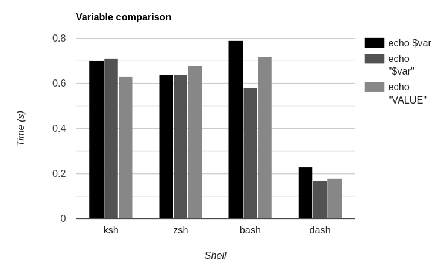

Testing 3 Common Shell Optimizations
Although worrying about performance in shell scripts seems oxymoronic at first (at least to me), I have seen enough tips to become curious about the actual benefits of some of them. So, I decided to put three common ones to the test, with a few self-made benchmarks.
Replacing if statements with logical operators
The idea is simple, using logical operators (&& and ||) instead of if statements.
For example:
if [ -z "" ]; then
echo "Empty"
else
echo "Not empty"
fi
Turns into:
[ -z "" ] \
&& echo "Empty" \
|| echo "Not empty"
Results
Running 10000 statements of each kind, 5 times, with 4 different shells, the results are:
We can see that the difference in most shells is small,
except for zsh,
which seems to have a specially bad time running if statements,
being a full 33% slower than with logical operators.
But I wouldn't go so far as to recommend removing them, as I will explain later.
Not catting into another program
This speaks of the possible methods of using a file as a program's input.
I tested 3 options.
The first one is redirecting the file contents using the < operator:
</etc/hostname grep A
The second one is the classic and amateurish cat pipe:
cat /etc/hostname | grep A
Finally, the third one is simply using the program's file argument:
grep A /etc/hostname
Results
NOTE: Done only with 1000 iterations.
For all shells the results were quite similar,
both the < operator and the argument method working at similar speeds,
but piping cat showing slightly slower results.
It is worth noting that the performance difference seems constant all 4 shells,
which indicates that the only difference is the cat loading.
Thankfully, the least readable of the three is also the slowest. Never cat into another program when shell scripting.
Quoting variables
The usage of quotes when surrounding variables is almost always recommended, as it avoids argument splitting, and globbing/wildcard expansion. Interestingly, it may be faster, having to skip all those steps (At least according to a SE answer). Let's put it to the test:
Firstly, let's consider the two options, without:
var="a b c d e f g h i j k l m n o p q r s t u v w x y z"
echo $var
And with quotes:
var="a b c d e f g h i j k l m n o p q r s t u v w x y z"
echo "$var"
And, just for fun, echoing the value directly:
var="a b c d e f g h i j k l m n o p q r s t u v w x y z"
echo "a b c d e f g h i j k l m n o p q r s t u v w x y z"
Results

It is definitely the most confusing out of the three graphs.
The performance hit of not using quotes varies from nothing in zsh
to over 30% in bash to actually being around 10% better in ksh.
Moreover, in all shells but ksh putting the value directly into echo was slower than using a variable.
Thinking it over, it makes sense, as each new string means that a new allocation must be made.
Except for ksh, for some reason.
Based on this, and that ksh is the least used of the four,
I would recommend using quotes for the variables.
So what?
Although the difference in the charts may seem dramatic,
they were not made in a context of an actual shell script,
nor with a real user in mind.
If you, like I, use dash for running shell scripts,
you are already faster than all other shells.
The testing shows that, in my case,
not using an if statement will save an astonishing single microsecond off the script.
So what?
Sorry to say it, sometimes the readability cost is just not worth it (At least outside loops).
The same cannot be said about the other two optimizations, so go use them.
Conclusions
dashis really fast.- Don't
catinto another program, anything else is better. - Use quotes when using variables, except if you want splitting or globbing.
- Feel free to use
ifstatements outside loops, they will only take a few microseconds longer.